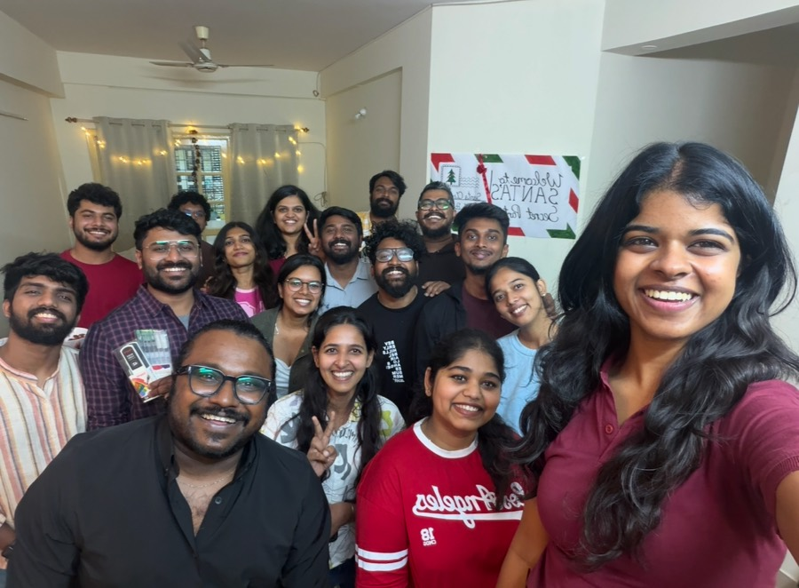
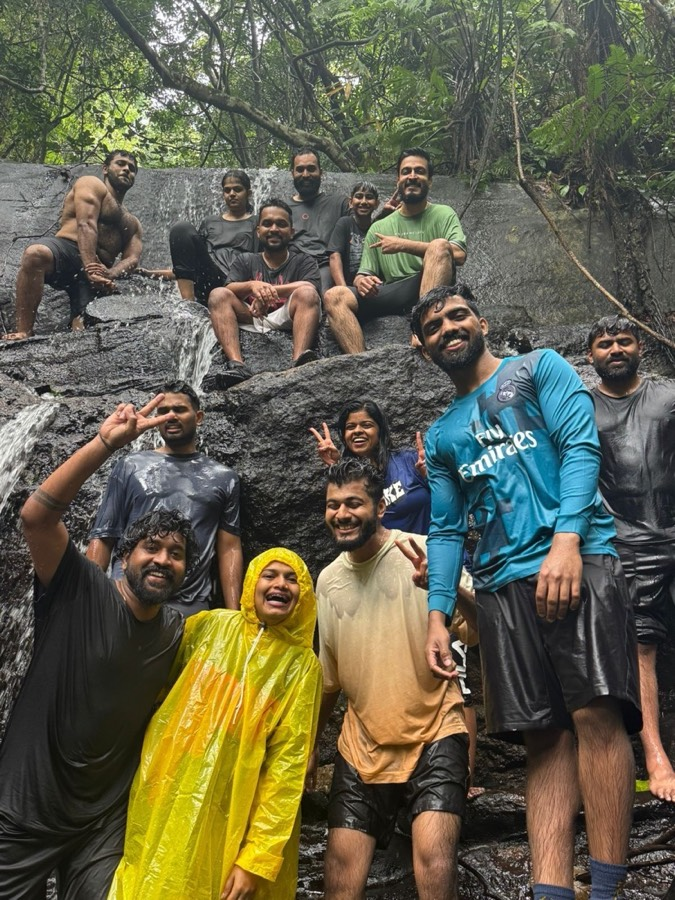
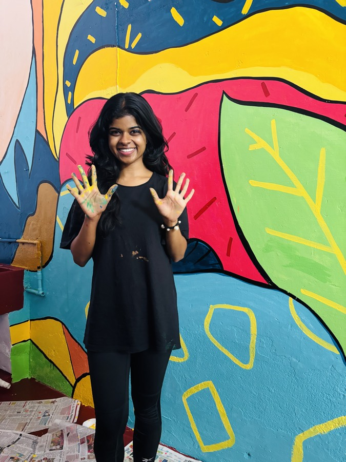
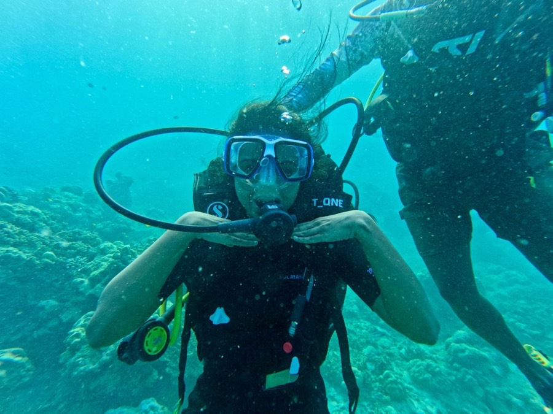
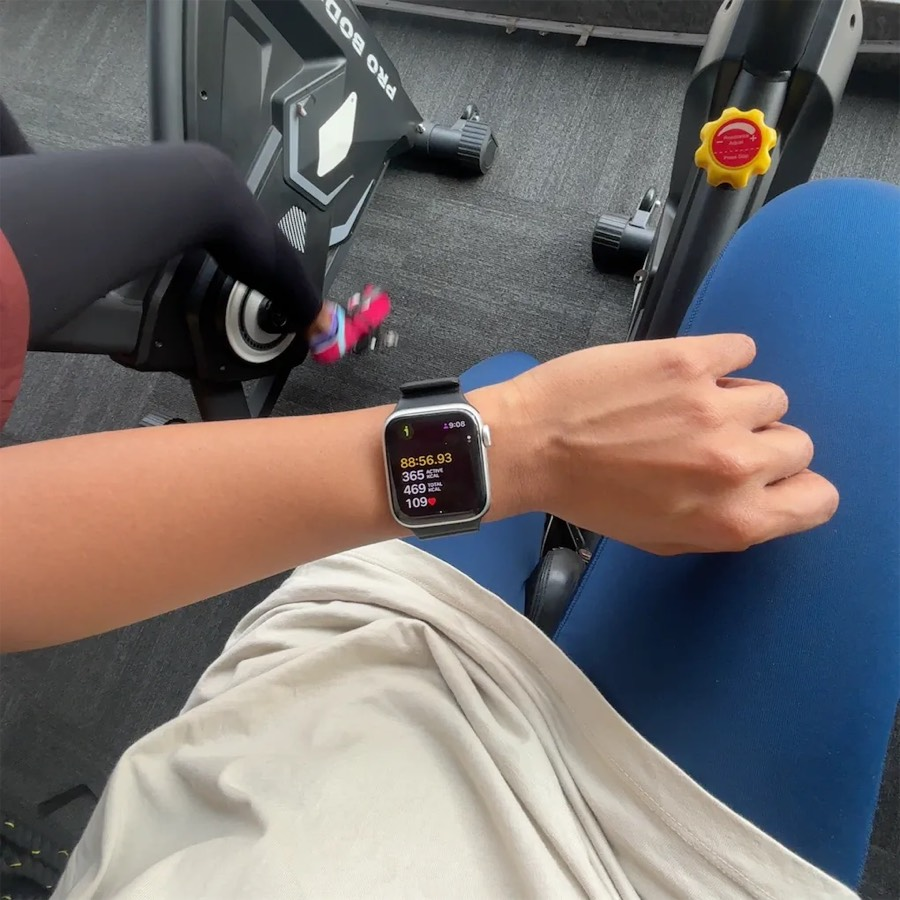
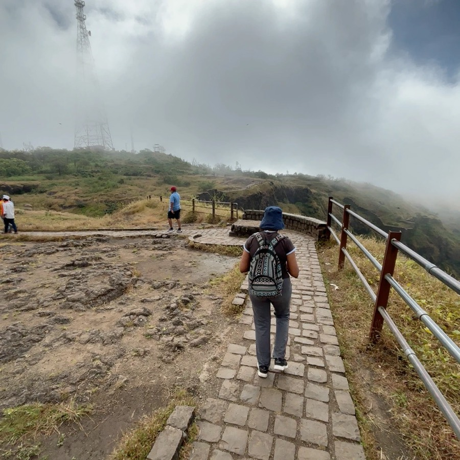

Project 02
Your money, at a glance
Portfolio
Holdings and P&L that read in seconds, on mobile and web.
See the processSenior UX Designer
Hi, I’m Nikita! I love a good UX puzzle, and for 4+ years at FYERS I’ve untangled tricky flows so users reach their goal without a second thought.

Work
Early drafts, finished products, and what I learned on the way.
FYERS Academy
Real past market data, played out in a working Android app built in three months.
See the processPortfolio
Holdings and P&L that read in seconds, on mobile and web.
See the processPartner Dashboard
Clients, earnings and tickets in one place — designed with the CEO and CXO.
See the processGenie · AI search plugin · 2023
A browser plugin that finds, saves and shares work links with AI. Shaped by interviews, a survey and testing with 10 people.
See the processKind words
From managers and teammates I’ve shipped with.
Nikita is one of those rare people who brings clarity wherever she goes. Give her an ambiguous problem, a loosely structured conversation, or a room full of conflicting ideas, and she’ll find a way to make sense of it all.
Most people fill the gaps with assumptions. Nikki fills them with questions, and then she comes back with a plan.
She has a real talent for spotting edge cases that others miss, which made our work far more robust.
With very little time to get familiar with the new workflow, she managed to find her footing quickly, going from designing interfaces to building and debugging an entire application.
She makes space for everyone’s voice, notices when someone has been unintentionally left out, and makes a conscious effort to bring them into the conversation.
She’s not just a designer; she has a way of thinking that makes her different from others, and I genuinely believe the industry is yet to see the full extent of her talent.
Read all 11 recommendations on LinkedIn (opens in a new tab)
Things I’ve made, tried and hosted that quietly shape how I design.

Secret Santa, hosted with love
Soaked, and still smiling
A wall I helped paint
Breathing slow, metres down
Showing up on the slow days
Walking into the cloudsHow I work
Good UX starts with questions. I like sitting with messy problems long enough to understand what can be removed, what must stay, and what needs to become clearer.
Before pixels, I want to understand what people are trying to decide, what makes them hesitate, and where trust breaks.
I turn notes and findings into journeys, then go looking for where they break — the edge cases, empty states, and moments of doubt.
Simplicity is the hard part. I strip flows back to what helps people decide, then design the details that make it feel trustworthy.
The work isn’t done at handoff. I stay close to engineering, and close to what real users do once it’s live.
I’d love to help make it make sense.